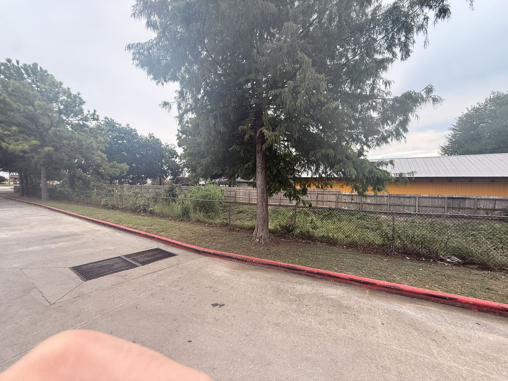
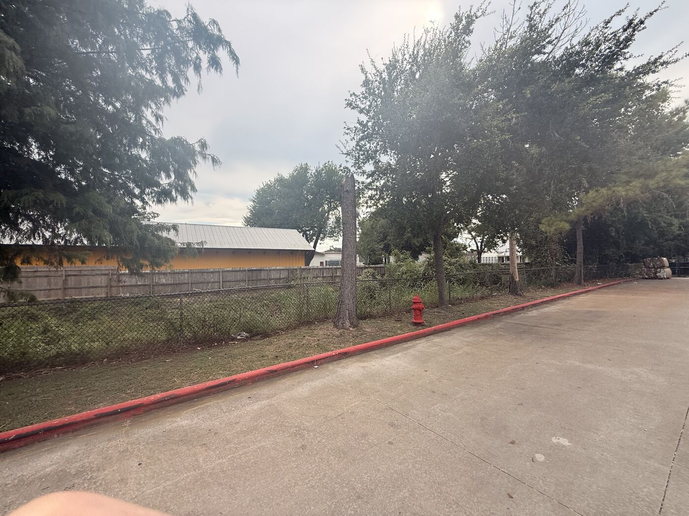
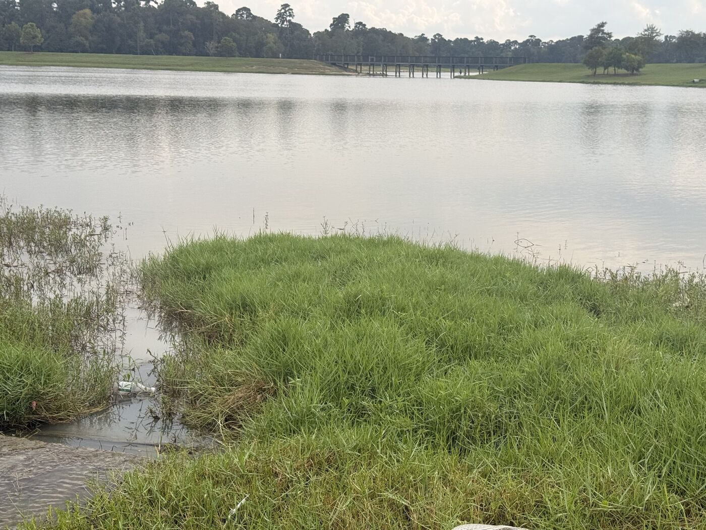
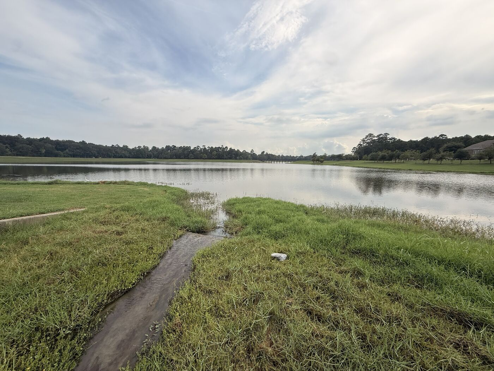
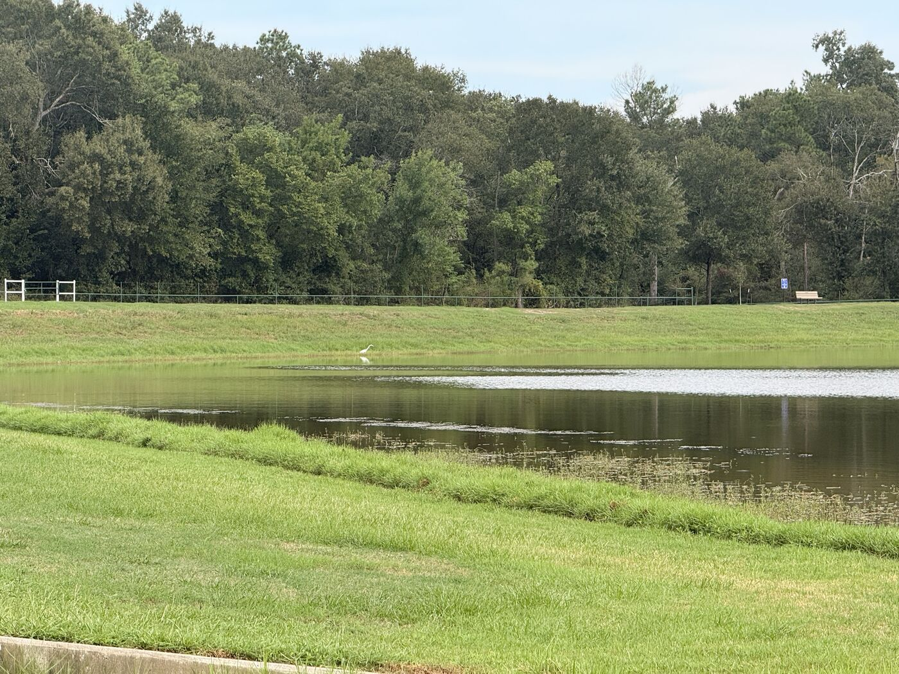
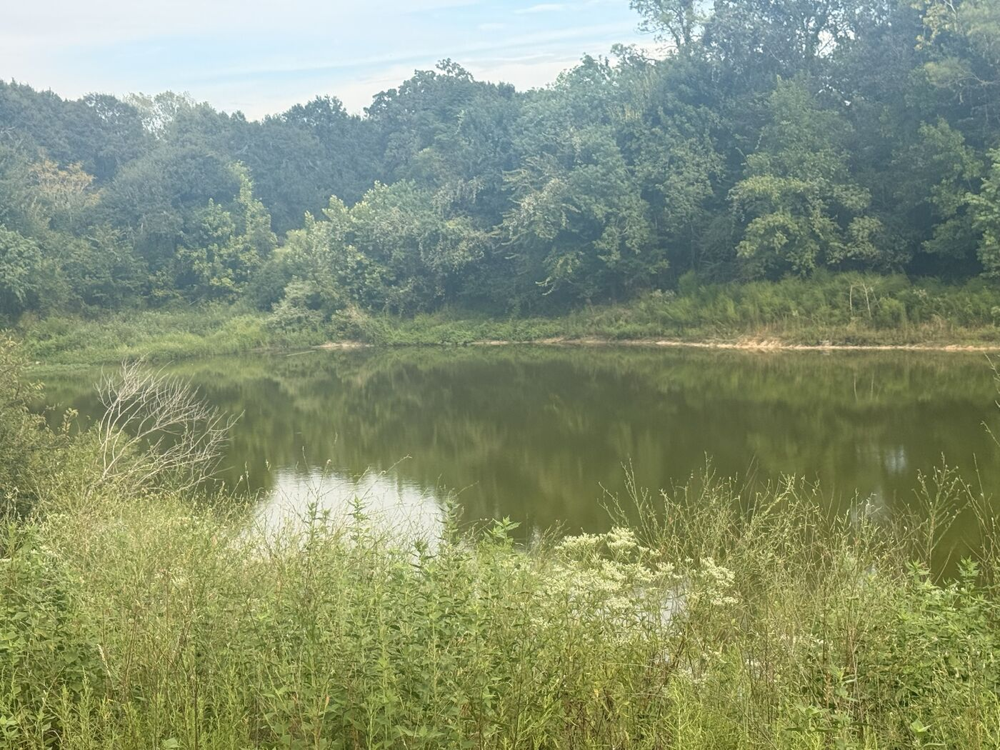
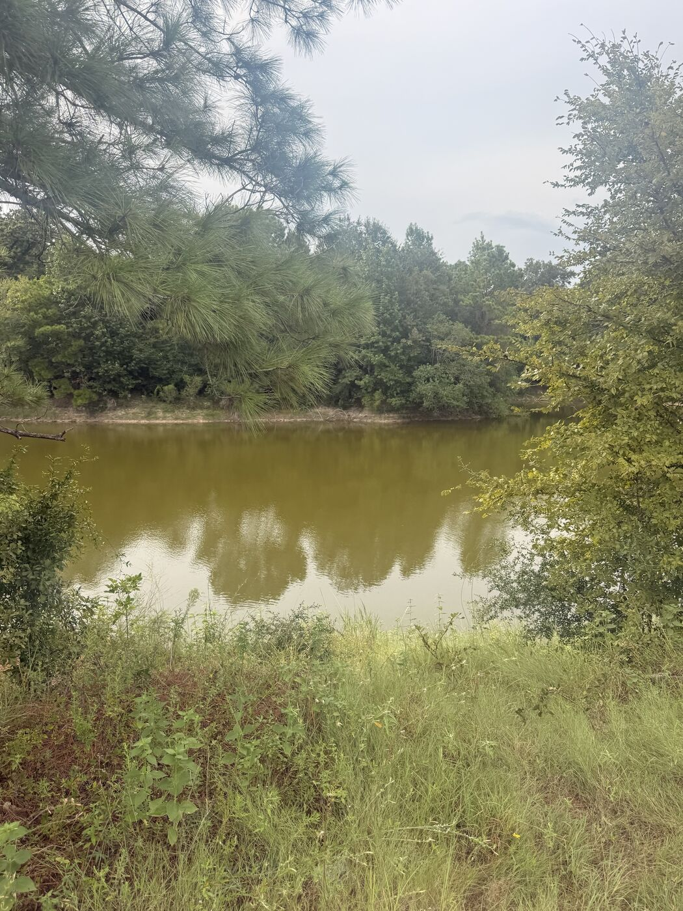

| Period | Wells | Subsidence | Flood claims |
|---|---|---|---|
| 1985–1995 | 8 to 14 measured/yr; 7 down to 5 trend-bearing | None | Sparse |
| 1996–2007 | 1 to 14 measured/yr; 5 down to 4 trend-bearing | Starting (first station 1994) | Sparse |
| 2008–2015 | 1 to 11 measured/yr; 3 down to 2 trend-bearing | Growing | Moderate |
| 2016–2017 | 3 to 5 measured/yr; 2 trend-bearing | Strong | Extreme spike |
| 2018–2024 | 3 to 8 measured/yr; 2 trend-bearing | Strong | Low (post-peak) |
| 2025–2026 | 0 reported (probable TWDB publication lag, not confirmed) | Strong | Low |
| Year | Combined claims | Total paid |
|---|---|---|
| 2016 | 287 | $22.3M |
| 2017 (Harvey) | 735 | $76.0M |
| 1994 (comparison) | 56 | $2.9M |
| 1998 (comparison) | 80 | $2.9M |
| 2001 (comparison) | 79 | $2.1M |
| Original claim | What was actually wrong | Correction |
|---|---|---|
| Coverage timeline chart | One data line used placeholder/illustrative numbers, not real ones, labeled that only in code, not on the page | Removed the placeholder line; chart now shows only real, counted data |
| "No wells tracked after 1985" | Well 6503104 was actually still being monitored through 2008 | Coverage table and text corrected to reflect the real timeline |
| "Flooding Likely" gages during Harvey | Paper said gages 1165 and 1160; the actual confirmed pair was 1165 and 1170 | Paper corrected; noted that the Russ Poppe field visit (near 1160) wasn't actually at a confirmed-flooded gage |
| "LIVE" badge on active wells | Implied real-time data; this site is actually a fixed snapshot | Relabeled to "USGS Active Site," added an explicit data-freshness note |
| "2016/2017 claims are 10-50x other years" | Didn't hold up against the site's own comparison table; real figure is closer to 3.6x-9.2x vs. the next-highest year | Corrected to the accurate comparison |
| Original claim | What was actually wrong | Correction |
|---|---|---|
| Findings: "fastest well 6503112, declining at 10.6 ft/yr" | Computed from just 2 readings, 2 years apart; nowhere near this project's own trend floor (5+ readings across 10+ years) | Findings rewritten around the rebuilt tiered dataset; the real fastest full-lifetime decliner is well 6503811 at 9.84 ft/yr |
| Evidence-tab well set (Map Explorer) | Only about 20 hand-picked wells shown, not ranked, with no stated reason for those particular wells; some no longer show a real trend | Rebuilt from the full 286-well TWDB inventory: 20 full-lifetime wells ranked strongest-to-weakest by trend, plus 3 more that only clear the trend floor in a 2000-2024 window and are recovering |
| Evidence tab's "WORKING THESIS" box | Still showed the paper's original, since-abandoned thesis after the actual thesis was rewritten in the Research Paper tab | Synced to the locked thesis wording used everywhere else on the page |
| P018/AULT station P001: "longest record in the area, 32 years" | Two other regional stations (NETP, ADKS) actually run slightly longer | Reworded to "longest-running of the stations shown here, at 31.7 years" |
| Original claim | What was actually wrong | Correction |
|---|---|---|
| "No well in this dataset was being actively tracked during Harvey" | True only of the small well set displayed on this page, not of the area. The inventory shows 8 wells measured in 2016 and 13 in 2017 | Rewritten to say what the record actually shows: not a measurement blackout, but trend-bearing coverage already thinned to its floor by 2015 |
| Coverage chart (both series) and the coverage table | Hand-entered numbers matching no dataset, under a code comment claiming they were "counted from this project's own dataset." The chart showed 3 wells in 1985 and 4 in 2025; the real figures are 7 and 0. Stations showed 12 where 8 exist | Both series regenerated from the source data, the table rebuilt, and the chart's provenance comment rewritten to say exactly where each series comes from and which one is not yet reproducible |
| Thesis: "coverage has fallen 77%... only two wells left" | Two real numbers from two different boundaries presented as one finding. 77% is the grid figure (13 to 3); two wells is the zip-code figure (7 to 2, a 71% fall) | The paper now reports the zip-code boundary throughout, because it is the boundary that matches the flood-claims data, and names the grid figure alongside it instead of blending them |
| Findings: the 3 post-2000 wells "fail that same floor over their full lifetime" | Impossible as written. A full record always has at least as many readings over at least as long a span as any window inside it, so only the R² part can fail | Restated as what actually happens: they fail the R² requirement over their full record (0.17, 0.39, 0.26) and clear the identical floor within 2000-2024. The same error appeared a second time in the Discussion, where they were also called "newer" and "too short"; they begin in 1964, 1977 and 1978 |
| Findings: "none show recovery"; only 3 recovering wells presented | Understated the project's own result. 8 of 16 usable post-2000 records are recovering on the grid boundary, 5 of 8 inside the zip codes | Recovery now reported at full scope, with the caveat that most of those slopes fit too poorly to rank |
| Well 6503104: "~85 readings", "roughly tenfold acceleration" | The record holds 115 readings, and the acceleration is about sixteenfold (0.77 to 12.07 ft/yr). It also clears Tier A on the numbers while being held out of the ranking | All three corrected, and the exclusion restated as a judgment about record shape rather than record strength |
| Cypress Creek gage levels: "current level shown is a live reading" | The values are fixed constants written into the page; nothing was being fetched | Relabelled as a dated snapshot, with readers pointed to HCFCD for current conditions |
| Subsidence station P007: "longest nearby record" | Undefined superlative, and P001 (1994) starts earlier than P007 (1999) | Replaced with the station's actual start year |
| "20 of the 85 wells that actually exist, roughly a quarter" | 85 is the count inside the two zip codes; the wider study grids hold 157. The same ratio is a quarter or an eighth depending on which is meant, and neither is "wells that actually exist" (TWDB's database holds selected wells, not a census) | Both denominators now named by boundary wherever the ratio appears |
| Adequacy framed as a standard the network needed to meet | The two-well bar is this project's own, set in advance. Passing it shows continuity, not that the network is adequate for the area or well distributed across it | Renamed throughout to a continuity benchmark set by this project, with the distinction stated |







| Layer | Agency | Verify at |
|---|---|---|
| Wells | Texas Water Development Board (TWDB) | TWDB Groundwater Data Viewer |
| Live wells | U.S. Geological Survey (USGS) | USGS Water Data for the Nation |
| Subsidence | Harris-Galveston Subsidence District (HGSD) | hgsubsidence.org |
| Creek gages | Harris County Flood Control District (HCFCD) | Harris County Flood Warning System |
| Flood claims | FEMA (OpenFEMA) | NFIP Redacted Claims v3 |
| Well 65-03-204/206 history | Rebecca Storms, P.G., TWDB Groundwater Monitoring Manager | Personal correspondence, Sept. 2026 (confirmed USGS site numbers, no record of 1985 discontinuation cause) |
FimaNfipClaims) that FEMA has since frozen and is retiring in favor of the v3 dataset linked above. The historical numbers themselves are unchanged, but if you're citing this yourself, reference the v3 dataset going forward. The subsidence trend charts (P018, AULT) are digitized by eye from HGSD's official chart images to show trend shape, accurate in direction but not guaranteed to the exact decimal. Growth/population figures came from secondary sources reporting Census data, not the Census Bureau directly.After Hurricane Harvey, I've always been intrigued by how flooding works: how one house can be destroyed while another a couple miles down the road doesn't get a drop near the front door. I watched this play out with my own friends: some had their homes damaged, and a few ended up sheltering with me during the storm. Years later, it made me wonder how much a factor like my neighborhood's retention pond in Coles Crossing actually plays into mitigating flooding, and what other factors might matter too.
This thought sent me down a deep rabbit hole of trying to discover what was at the bottom. In my journey down, I found that four agencies (TWDB, USGS, HGSD, and HCFCD) all track parts of the puzzle: groundwater levels, ground sinking, flooding. But the pieces exist scattered across four different systems, and no single source connects them. That gap is what this paper investigates: whether or not the public monitoring network in Cypress is on par with the growth and environmental change it has experienced since the mid-1980s.
Seven sources shape the background for this project, organized around the two questions it actually asks: one from the paper's original scope, one from where the paper ended up.
Does subsidence worsen flooding in Cypress? (the paper's original question, now a secondary thread, see Discussion)
Kasmarek, Johnson, and Ramage (2010) claim that subsidence directly worsens flooding, because it creates low-lying areas where water collects instead of draining away. This is based on USGS reports from their long-running study of the Chicot, Evangeline, and Jasper aquifers. This is important to my case because it's the earliest, most direct source connecting subsidence to flooding, a position most local agencies still reference today.
Talbott (2016), then the Executive Director of the Harris County Flood Control District, argued that uniform subsidence doesn't necessarily worsen flooding; only differential subsidence would, since uniform sinking lowers the whole floodplain together without changing how fast water drains. His claim was based on the district's own internal comparison of subsidence rates along Cypress Creek, not a published study, and it was disputed at the time by University of Houston geologist Shuhab Khan. This matters to my paper because it directly connects to my own subsidence data at P018 and AULT: both stations are sinking at different rates, not the same rate. By Talbott's own logic, that's exactly the condition under which subsidence would worsen flooding, since it's differential, not uniform.
Source added after an independent review of this project (see Methods): Miller and Shirzaei (2019), published in Remote Sensing of Environment, mapped both pre-Harvey subsidence rates and the actual Harvey-flooded area across the whole Houston-Galveston region using satellite radar (InSAR), then ran a statistical test and found the two were correlated: 85-89% of the flooded area had been subsiding at meaningful rates beforehand. This matters to my paper because it's a real, region-wide, statistically-tested version of the differential-subsidence argument my own P018-vs-AULT comparison could only approach as a thought experiment. It doesn't prove causation in Cypress specifically, but it's the strongest evidence in this literature review for the "differential subsidence matters" side of the Talbott debate.
How has monitoring here evolved, and how well does it actually work today? (the paper's actual question)
Kasmarek, Ramage, and Johnson (2016) documented 13 measuring stations built between 1973 and 1980, and found that one of them, the Addicks station, kept sinking even after regulation began cutting back groundwater pumping elsewhere. This matters to my case because it shows subsidence isn't uniform, hinting at differential subsidence, since each station shows its own rate rather than one shared trend. This connects directly to my own P018 and AULT data, which shows that same differential pattern.
Braun, Ramage, and Shah (2019) found parts of the Jasper aquifer dropped 200 feet between 2000 and 2019. They concluded this from USGS's 2019 regional water-level survey across Houston-Galveston. This matters because it shows this kind of decline isn't just limited to aquifers like Chicot and Evangeline (the same aquifers my own wells are drawn from), meaning a third, deeper aquifer is under similar pressure too.
Turco et al. (2025) confirms 1985 was a real regulatory turning point (the year HGSD reorganized into 8 zones), based on a century-long historical review of Houston-area groundwater and subsidence research. This matters because it's the exact same year my wells 65-03-204 and 65-03-206 stopped being monitored. Although the review doesn't explain why they were dropped, I later tried to fill that gap through direct outreach to TWDB, which was answered by Rebecca Storms, though even she had no conclusion as to why. The same review also documents just how much worse subsidence used to be before regulation: rates up to a decimeter (about 4 inches) a year in southeast Houston by the 1970s, with 65% of the region's entire century of groundwater-storage loss happening in that pre-regulation stretch. Cypress's own stations today (0.89 to 2.38 cm/yr) are real but modest by comparison, which is itself evidence that regulation worked, at least regionally.
Taylor and Alley (2001), in USGS Circular 1217, set out what long-term water-level records are actually for: separating pumping effects from drought, establishing the baseline a later change is measured against, and supporting analyses nobody has thought of yet at the time the well is drilled. That last point is the one that matters most here, because it is the argument against letting a long record lapse even when nothing looks wrong. It also names the failure mode this project ran into, that water-level data is often collected by one agency and published by another, with accessibility suffering at the handoff.
The USGS National Ground-Water Monitoring Network's page for TWDB is worth reading against my own rules, because TWDB already publishes operational definitions of its own. There, a "surveillance" well is one measured about once a year and a "trend" well is one measured six times a month or daily, and a well needs at least a five-year record to enter the network at all. TWDB currently serves 1,322 sites to that network. Two things follow. First, my two-well continuity benchmark is mine, not an agency threshold, and the comparison makes that visible rather than hiding it. Second, there is a terminology collision I should name plainly: TWDB's "trend well" means measured often, while my "trend-bearing well" means holding a record a straight line can describe. They are different ideas sharing a word, and this paper uses the second meaning throughout.
U.S. Geological Survey (2017) built the first interactive tool to combine groundwater-level data and land-subsidence data for the whole Houston-Galveston region in one place; by USGS's own account, "the first time that groundwater and subsidence data have been put together" for this area. This matters to my case because it's the second source in this review to link two of the four layers this paper tracks: Miller and Shirzaei combined subsidence and flood data, USGS combined groundwater and subsidence. Neither, nor anything else found in this project, puts all four together: wells, subsidence, flood claims, and creek levels. That's the actual gap this paper is pointing at.
This project combines data from four main public agencies, collected over two weeks in September 2026. Claude, an AI assistant, was used to query public APIs and navigate agency data tools under my direction: I decided which sources to pursue and evaluated what the data actually showed, while Claude handled the technical retrieval.
Before pulling the full well inventory, I fixed the rules for what would count as "monitored" and what would count as a real trend, set in advance, so the analysis couldn't be adjusted after seeing results. Anyone repeating this analysis on TWDB's data should get the same answer using these same rules:
| Rule | Setting |
|---|---|
| Study boundary | TWDB grids 6058/6059/6502/6503, cross-checked against zip codes 77429/77433 |
| Analysis window | 1985–2026 |
| Trend-bearing in a given year | A well counts for a year if it has 5+ measurements across a 10+ year span, those measurements are evenly spread (the largest gap between consecutive measurement years is no more than twice the mean gap), and its record span brackets that year. Note what is not in this rule: there is no R² term, so the coverage figures measure record continuity and sampling regularity, not how well a straight line fits. R² enters only the separate A/B/C tier ranking below. Note also that it is retrospective: a well counts for 1995 on the strength of its whole record, including measurements taken after 1995, so these figures describe what the record can support today, not what a researcher could have known at the time. |
| "Monitored" in a year | reported at 1, 2, and 4 measurements/year, side by side |
| Date basis for trends | Slopes and R² on the map are computed from the decimal measurement date. The inventory CSV computes them from the integer measurement year, which gives slightly different values for wells measured several times a year: well 6503811 is 9.84 ft/yr by date and 9.35 ft/yr by year. Neither is wrong; the map figure is the higher-resolution one. |
| Trend floor | 5+ measurements over 10+ years |
| Tier A (strong) | 20+ measurements, 20+ year span, R² ≥ 0.7 |
| Tier B (moderate) | 10+ measurements, 10+ year span, R² ≥ 0.5 |
| Tier C (indicative) | meets the floor only; direction noted, not weighted heavily |
| Adequacy condition | 2+ wells monitored every year, each showing a trend-floor-qualifying record, within the years monitored |
We obtained historical well records, including 6503204, 6503206, and 6503104, from TWDB's Groundwater Database. I directed Claude to navigate TWDB's online report tool well by well, and checked its work at each step to make sure no errors occurred. One real setback came up: TWDB's county-wide search tool returned empty results due to what appears to be a bug on their end, so every well had to be looked up individually by its state well number instead.
I obtained live well data (6503112, 6503113, 6503313, and 6059706) by directing Claude to query USGS's public API directly using each site's monitoring location number. Claude also researched contact information at TWDB and USGS, surfacing Rebecca Storms, P.G. and Christopher Braun as relevant contacts, which led to the outreach email that got a direct response from Storms, who sent the full 206-point historical record for well 6503204 shortly after. One limitation worth noting: TWDB's hosted version of USGS data lags behind, since TWDB only includes "Approved" readings, not more recent "Provisional" data, so USGS's own site remains the more current source.
From HGSD, I obtained data on 12 subsidence stations (including P018, AULT, and P001), covering total displacement, current sinking rate, and for two stations, full trend charts. I had Claude query HGSD's public feature service directly for the summary statistics; for P018 and AULT specifically, since no raw numeric download was available, the data points were estimated by eye from HGSD's official published chart images. There aren't many limitations here, but the digitized P018/AULT numbers aren't guaranteed to the exact decimal due to that limited accuracy.
From HCFCD, I obtained current water levels and flood-stage thresholds for 6 gages along Cypress Creek. The key find came from switching the tool to "Channel Status" and checking August 31, 2017, the tail end of Hurricane Harvey. Two gages, 1165 (Eldridge Pkwy N.) and 1170 (Huffmeister Road), both showed "Flooding Likely" at that exact moment, straight from the district's own record. Correction found during a later review of this project: the field-visit route was built around gage 1160 (Grant Road) instead of 1170, meaning the Russ Poppe Family Park visit is site reconnaissance near a gage that wasn't actually one of the two confirmed-flooded ones: useful for context, not verification of a Harvey flood point. Cypress Park (near gage 1165) is reconnaissance at one of the two confirmed-flooded points, but a 2026 site visit shows present-day conditions, not what the site looked like during Harvey itself; the district's own gage record is what actually confirms the 2017 flood. One limitation: I tried pulling exact historical water-level numbers through HCFCD's API and hit a wall (it's blocked), so the Harvey status is solid, but precise peak numbers aren't included.
I also obtained flood insurance claims for both Cypress zip codes (77429 and 77433), covering 1978–2024, pulled through FEMA's OpenFEMA public API. One limitation here: the specific API version used has since been frozen by FEMA in favor of a newer version, and the 77429 query hit a 1,000-record cap, so later years for that zip code may be undercounted. For population and housing statistics used in the growth timeline, I relied on secondary sites reporting Census data rather than the Census Bureau directly, since pulling it firsthand was blocked by an API key requirement.
AI was used in this project, but not how most people think. Think of it as me as the general and Claude as the troop.
Before treating any of this project's claims as final, I ran the whole project through a separate AI (GPT-6 Astra) for an independent adversarial review and a constructive review, then brought both back into this same project to decide what to actually fix. That process caught real errors (see the Corrections Log on the Evidence for Thesis tab for the full list), including a misleading chart, a gage-number mix-up, and an unchecked statistic. It also surfaced a real academic source (Miller and Shirzaei, 2019) that strengthened the literature review. I decided which of its suggestions to act on; not everything it recommended was accepted.
Of the wells in this dataset, 19 have a record strong enough (by this project's own floor of 5+ measurements across 10+ years, and an R² bar of at least 0.5) to be ranked by trend strength over their full lifetime, and every single one is declining. None are stable, and none show recovery when you look at their whole record. The fastest is well 6503811, declining at 9.84 ft/yr between 1979 and 1999. A 20th well, 6503104, shows an even more dramatic decline that a straight-line trend can't capture: a steady 0.77 ft/yr from 1938 to 2003, then a roughly sixteenfold acceleration afterward, to 12.07 ft/yr, that this project can't explain. Well 6503204 is worth mentioning specifically: thanks to a complete record obtained directly from Rebecca Storms at TWDB, this well shows depth to water increasing from about 6.5 ft to 59 ft below surface (i.e. the water level fell) between 1931 and 1985, with a sharp, unexplained jump around 1952-53. A separate set of 3 wells (6503907, 6502612, 6503906) has no shortage of data: 67, 60 and 50 readings spanning four decades or more. What they fail over their full lifetime is the trend floor's R² requirement, because their full records are too scattered for a straight line to describe (R² of 0.17, 0.39 and 0.26). Applying that identical floor to just their 2000-2024 stretch, all three clear it, and in that window each of the three is recovering, not declining. Those three are not the whole recovery picture, only the part strong enough to rank. Across the wider study grids, 8 of the 16 wells holding a usable post-2000 record are recovering, 6 are declining and 2 are flat; inside the 77429/77433 boundary this paper reports on, it is 5 recovering against 3 declining. Most of those recovery slopes fit too poorly to rank (6503915 is a steep looking 4.75 ft/yr at an R² of just 0.16), so the direction is well supported across the area while the rate, for most individual wells, is not. Four more recently drilled wells (6503112, 6503113, 6503313, 6059706) are actively monitored today, but with only 0 to 4 readings apiece on file, none has enough of a record to support a trend of its own; they represent renewed monitoring effort since 2012, not trend evidence.
The data shows 12 stations being monitored, with rates ranging between 0.89 to 2.38 cm/yr, not the same everywhere. P018 and AULT are the two sore thumbs of the situation: P018 has been sinking since the 2000s but is slowing down, while AULT has only been tracked since 2015 but is speeding up. Yet at this current day, they're roughly at the same speed (~1.9 cm/yr). These two trend lines were estimated by eye from the official published charts, since exact numbers weren't available.
The data pulled tracked the areas of zip codes 77429 and 77433. In 2016 they had 287 claims for water damage, and in 2017 it more than doubled that amount with 735 claims. Almost every other year on record was fewer than 100 claims going back to 1978, and remarkably, the $76 million paid out in 2017 alone was more than every other year combined. The hurdle that comes with this is that it only counts insured losses, so the actual numbers are probably much worse than the ones shown.
When looking at all the subgroups on one big timeline, they show almost no overlap. Wells were prominently tracked before 1985, but subsidence and flood data barely existed yet. In 2016-17, when the big flood happened, wells were nowhere to be seen, while subsidence stations had a prominent place by then. Not until 2020 did wells start to reappear, after the worst flood and most of the growth had already happened.
CONFIRMEDThe lack of overlapping, trend-quality coverage gave researchers very little to compare data against, since one layer was consistently the weakest link. This erosion was especially damaging because it happened during exactly the years Cypress grew the most: trend-bearing well coverage fell 71% inside 77429/77433 while the population climbed past 200,000. This wasn't a gap in measurement itself: wells kept being measured throughout, including during Hurricane Harvey, when 8 wells were tracked in 2016 and 13 in 2017. But by that point in the record, trend-bearing coverage had already thinned to two wells inside the zip boundary (2 in 2015, holding at 2 through 2024; the wider grid boundary gives 3 over the same stretch), so even though data existed, there wasn't the density of high-confidence records a question like this would need. That's not unique to the Harvey years either: across the full dataset, 58 of the 85 wells with a water-level record inside 77429/77433 never had enough readings to support a real trend, and the wider study grids give the same picture at 110 of 157 (6 of those 157 carry rows with no usable depth value, leaving 151 actually workable).
There isn't enough evidence in this project to prove Talbott's condition is actually being met in a way that causes flooding; only that it's possible. The P018-vs-AULT data shows real differential subsidence in Cypress, but subsidence could just be one factor among several, not the whole explanation. Consider two areas: one with heavy pavement and high rainfall will likely flood more than another regardless of how much it's sinking. INTERPRETATIONIf two areas had the same rainfall and the same amount of pavement, that would rule out those two factors as the reason one floods more than the other, but it wouldn't rule out drainage infrastructure. Pavement itself puts more load on a neighborhood's drainage system in the first place, since water that would normally soak into the ground instead has to be carried away by that system. So even with rainfall and pavement held equal, differential subsidence would still be competing with a difference in how well each area's drainage can handle that same runoff, not standing alone as the explanation. HYPOTHESIS (UNTESTED)This is a logical thought experiment, not something this project actually tested: no data here isolates any of these factors to check what's actually driving the difference between two specific areas.
CONFIRMEDGroundwater in the wells with a long, trustworthy record has been declining for decades; that part isn't in dispute. Where things stand more recently is less settled: those same long-run wells are dominated by pre-2000 data, and a separate set of wells (long-running, but too scattered over their full records to earn a place among the ranked long-run trends) shows a recovering direction when you look at just their 2000–2024 stretch. The subsidence in Cypress is differential, confirmed by the P018-vs-AULT data showing one area accelerating while another decelerates. The three data layers also never had strong, trend-quality coverage at the same time: well monitoring continued throughout, but the two long, complete-record wells this project leans on most for the deep historical trend, 6503204 and 6503206, stopped being measured in 1985, while subsidence and flood-claims data didn't become reliable until well after that point. COMPETING EXPLANATIONWhat isn't proven is that subsidence caused or worsened the 2016-2017 flood spike; Harvey was severe enough on its own to explain catastrophic flooding regardless of ground conditions.
Three confounds shape flooding beyond subsidence. Rainfall: more rain simply means greater flood risk. Pavement: since pavement is far less permeable than grass or open ground, water has nowhere to go but up. And drainage infrastructure: the worse a neighborhood's infrastructure, the more water sits stagnant instead of draining away. HYPOTHESIS (UNTESTED)The best guess I can make, based on what I've seen growing up, is that drainage infrastructure is an underexplored piece of this, but this project didn't test it. Driving past certain neighborhoods as a kid, my mom would point out how nice the houses were, yet they'd flood every time, even though we lived only a mile away and rarely flooded ourselves. A big reason for that difference was the retention pond next to our own neighborhood, and how well our streets could handle water compared to theirs.
CONFIRMEDAt the end of the day, Cypress's monitoring network held up to the standard it needed to meet, but barely, and largely invisible to anyone outside this project, because TWDB's own public tools don't work. It's not that every agency failed: HGSD's subsidence data is quick and easy to verify. This is a coverage-margin problem and a discoverability problem, and both point specifically at TWDB's own systems.
The continuity benchmark I set for this project required 2 or more wells with trend-quality data within a year. Meeting it is not the same as the network being in good shape. Inside zip codes 77429 and 77433, trend-bearing coverage fell 71 percent, from 7 wells to 2, which is the benchmark's exact floor and a margin of zero. The wider grid boundary tells the same story more gently, 13 wells down to 3, a 77 percent fall. I report the zip figure as the headline because it is the boundary that shares geography with the flood-claims data this project uses. The reason for that comes down to replacement: of the 27 wells measured since 2013, 18 started in 2003 or later, and 8 as recently as 2020–21. That's consistent with what Rebecca Storms told us: her assumption that the two oldest wells were plugged due to age, though that explains why those specific wells went offline, not a broader replacement policy across the whole network. All this means is that the newer wells simply can't show a strong enough trend yet; that's a data-maturity problem, not a monitoring-stopped problem.
The second pillar is discoverability. I had Claude navigate TWDB's own Harris County well-search tool directly, and it failed outright, three times, unfiltered and filtered, reproducing the same failure every time and never returning a result. Separately, my own well-by-well research before running the full inventory only turned up 20 wells. Against the 85 wells holding water-level records inside 77429/77433, the boundary this paper reports on, that is roughly a quarter; against the 157 inside the wider study grids it is closer to an eighth. These are two different failures pointing at the same problem: however you go looking, TWDB's own public tools make this data hard to find. Worth noting, HGSD's subsidence data is quick and easy to check by comparison, so this isn't an every-agency failure; it's specifically TWDB's public tools.
The third and final pillar: the wells with the longest, most trustworthy records are all historically declining. But that's not the whole story: a separate set of newer wells, too short and noisy on their own to earn a place among those trusted long-run records, show a promising direction of recovery when you look at just their 2000–2024 stretch.
If I'd recommend one thing, it's fixing TWDB's broken tool and continuing to fund newer wells, so the trend data has more years to reference and gets stronger with each one added.
Citation format may need adjusting to match a specific style guide (APA/MLA) before final submission.